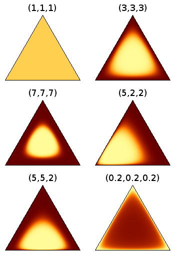
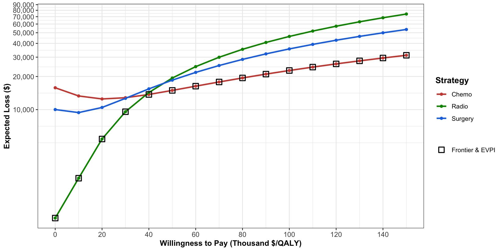

Uncertainty analysis
EPIB 676 session 10, McGill University
2/3/23
Packages
Today
Deterministic uncertainty analysis
Probabilistic sensitivity analysis
Decision-analytic model as function
- Function mapping inputs (data, parameters) into estimated outcomes for two or more alternatives
- Propagating uncertainty
- Uncertain inputs → uncertain outputs
Three types of uncertainty
First order (stochastic): variation between statistically identical patients
Second order (parameter): uncertainty in a population parameter
Third order (structural): uncertainty in relation between parameters enforced by model
Three types of uncertainty
First order (stochastic): variation between statistically identical patients
- Simulate enough replications/individuals to make negligible
Second order (parameter): uncertainty in a population parameter
- Use parametric sensitivity analysis to analyze
Third order (structural): uncertainty in relation between parameters
- Use structural sensitivity analysis to analyze
Uncertainty analysis types
Changing inputs = parameter uncertainty analysis
Univariate: change one parameter at a time
Scenario/multivariate: change 1 or more parameters at a time
Probabilistic: sample uncertain parameters from distributions (and/or bootstrap input data)
Changing model
- Structural: change relation between parameters within model
Toy model: a death-averting treatment decision tree
l_prms <- list(cost_treat = 60000, #base case parameters
prob_death_noTreat = .3,
rr_death_drug = 0.5,
QALY_survive = 12,
cost_survive = 12000)
model <- function(l_prms){
tot_cost_noTreat = (1-l_prms$prob_death_noTreat)*l_prms$cost_survive
tot_cost_treat = (l_prms$cost_treat +
(1-l_prms$prob_death_noTreat*l_prms$rr_death_drug)*
l_prms$cost_survive)
tot_QALY_noTreat = (1-l_prms$prob_death_noTreat)*l_prms$QALY_survive
tot_QALY_treat = (1-l_prms$prob_death_noTreat*l_prms$rr_death_drug)*
l_prms$QALY_survive
return(
list(tot_cost_noTreat=tot_cost_noTreat, tot_cost_treat=tot_cost_treat,
tot_QALY_noTreat=tot_QALY_noTreat, tot_QALY_treat=tot_QALY_treat,
ICER_treat = (tot_cost_treat - tot_cost_noTreat)/(tot_QALY_treat - tot_QALY_noTreat)))
}Base case results
Base case means all parameters at their most likely value.
One way sensitivity analysis
Define a “min” and “max” plausible value for an uncertain parameter
Change the parameter value along the range
Observe change in the output
Ex: One way sensitivity analysis
Min rr death with drug
$tot_cost_noTreat
[1] 8400
$tot_cost_treat
[1] 71280
$tot_QALY_noTreat
[1] 8.4
$tot_QALY_treat
[1] 11.28
$ICER_treat
[1] 21833.33Max rr of death with drug
$tot_cost_noTreat
[1] 8400
$tot_cost_treat
[1] 69840
$tot_QALY_noTreat
[1] 8.4
$tot_QALY_treat
[1] 9.84
$ICER_treat
[1] 42666.67Note on one-way sensitivity analysis
Most parameters \(\rightarrow\) outcomes in most models have monotonic relationships
As parameter \(\uparrow\), outcome \(\uparrow\)
As parameter \(\uparrow\), outcome \(\downarrow\)
If you know it’s monotonic, can just run the max, min, and baecase values
If in doubt, check several points and plot
Plot parameter \(\rightarrow\) output in OWSA
t_rr_drug_owsa <- data.frame(
rr_death_drug = seq(from=rr_drug_min, to=rr_drug_max, length.out=20),
ICER_treat = 0)
for (row in 1:nrow(t_rr_drug_owsa)){
l_prms_temp <- l_prms
l_prms_temp[["rr_death_drug"]] <- t_rr_drug_owsa[row, "rr_death_drug"]
t_rr_drug_owsa[row, "ICER_treat"] <- model(l_prms_temp)$ICER_treat}
ggplot(data=t_rr_drug_owsa, aes(x=rr_death_drug, y=ICER_treat))+
geom_point()+geom_line()One-way sensitivity on every parameter
All uncertain parameters assigned min and max value
t_owsa <- data.frame(
name = names(l_prms),
value = unname(unlist(l_prms)),
value.min = c(30000, .16, .2, 9, 8000),
value.max = c(100000, .45, .6, 16, 16000),
ICER.min = 0, ICER.max = 0
)
t_owsa name value value.min value.max ICER.min ICER.max
1 cost_treat 60000.0 3.0e+04 1.0e+05 0 0
2 prob_death_noTreat 0.3 1.6e-01 4.5e-01 0 0
3 rr_death_drug 0.5 2.0e-01 6.0e-01 0 0
4 QALY_survive 12.0 9.0e+00 1.6e+01 0 0
5 cost_survive 12000.0 8.0e+03 1.6e+04 0 0OWSA on every parameter
Loop over parameters, calculate outcome at min and max value
for (row in 1:nrow(t_owsa)){
l_prms_temp <- l_prms
# Calculate ICER with parameter at min value
l_prms_temp[[t_owsa[row,"name"]]] <- t_owsa[row,"value.min"]
t_owsa[row, "ICER.min"] <- model(l_prms_temp)$ICER_treat
# Calculate ICER with parameter at max value
l_prms_temp[[t_owsa[row,"name"]]] <- t_owsa[row,"value.max"]
t_owsa[row, "ICER.max"] <- model(l_prms_temp)$ICER_treat
}
# Add column for range of the ICER
t_owsa$ICER.range <- abs(t_owsa$ICER.max - t_owsa$ICER.min); t_owsa name value value.min value.max ICER.min ICER.max ICER.range
1 cost_treat 60000.0 3.0e+04 1.0e+05 17666.67 56555.56 38888.8889
2 prob_death_noTreat 0.3 1.6e-01 4.5e-01 63500.00 23222.22 40277.7778
3 rr_death_drug 0.5 2.0e-01 6.0e-01 21833.33 42666.67 20833.3333
4 QALY_survive 12.0 9.0e+00 1.6e+01 45777.78 25750.00 20027.7778
5 cost_survive 12000.0 8.0e+03 1.6e+04 34000.00 34666.67 666.6667Tornado diagram code
p_tornado <- ggplot(data = t_owsa) +
geom_segment(aes(x = reorder(name, ICER.range),
xend=reorder(name, ICER.range),
y = ICER.min,
yend=ICER.max), size=6, color="grey")+
theme(legend.position = "None")+
coord_flip()+
geom_hline(yintercept = l_basecase_results$ICER_treat, color="black")+
geom_hline(yintercept = 50000, alpha = 0.5, color = "red")+
scale_alpha_manual(values = c(1, 0))+
scale_y_continuous(labels = function(x){paste0("$",x/1e3,"K")},
)+
xlab("")+
ylab("ICER of treatment vs. no treatment")Tornado diagram
Another example
OWSA approach with multiple policies
Two way sensitivity analysis
Check outcome while changing pairs of inputs
rr_death_drug = seq(from=rr_drug_min, to=rr_drug_max, length.out=20)
prob_death_noTreat = seq(from=.16, to=.45, length.out=20)
t_twoway <- expand.grid(rr_death_drug=rr_death_drug,
prob_death_noTreat=prob_death_noTreat)
t_twoway$ICER <- 0; l_prms_temp <- l_prms
for (row in 1:nrow(t_twoway)){
l_prms_temp[["rr_death_drug"]] <- t_twoway[row,"rr_death_drug"]
l_prms_temp[["prob_death_noTreat"]] <- t_twoway[row,"prob_death_noTreat"]
t_twoway[row,"ICER"] <- model(l_prms_temp)$ICER_treat
}
t_twoway$preferred <- ifelse(t_twoway$ICER > 50000, "Do not treat", "Treat")
head(t_twoway) rr_death_drug prob_death_noTreat ICER preferred
1 0.2000000 0.16 40062.50 Treat
2 0.2210526 0.16 41118.24 Treat
3 0.2421053 0.16 42232.64 Treat
4 0.2631579 0.16 43410.71 Treat
5 0.2842105 0.16 44658.09 Treat
6 0.3052632 0.16 45981.06 TreatTwo way sensitivity analysis
Two way sensitivity analysis
Complex two-way example

3-way sensitivity analysis example
Cost analysis of mobile health TB contact investigation, Turimumahoro et. al. 2022
Scenario analysis
Can also construct “scenarios” corresponding to possible parameter regimes
Useful for:
Design parameters (discount rate, time horizon, perspective)
Possible scenarios defined by >1 parameter (e.g., “Omicron wave” scenario with \(\uparrow\) infectivity and \(\downarrow\) vaccine efficacy)
Today
Deterministic uncertainty analysis
Probabilistic sensitivity analysis
Limits of deterministic uncertainty analysis
Lots of uncertain parameters
Hard to visualize varying >2
Treats range of possible values as equally likely
Want to know: how certain are our results given all the uncertainty in all parameters?
Recap: uncertainty in Bayesian terms
Recap: uncertainty in Bayesian terms
Posterior \(\rightarrow\) parameter uncertainty
Sampling distn \(\rightarrow\) stochastic uncertainty
Posterior predictive distn \(\rightarrow\) uncertainty in outcomes
Basic PSA procedure
Assign distribution to uncertain parameters (or, bootstrap from individual-level data)
Sample N input parameter sets (often, 10,000)
Run model and calculate outcomes for each parameter set
From the output, you can:
Report quantile-based credible intervals: 20 (95% CrI 17 to 22) adverse events averted
Make probabilistic statements: Treatment was cost-effective in 87% of iterations
Commonly used distributions
| Parameter type | Range | Dist’n(s) |
|---|---|---|
| Probability | [0,1] | Beta |
| Relative risk | [0,\(\infty\)] | lognormal |
| Variable cost (e.g., hospital stay) | [0,\(\infty\)] | gamma, lognormal |
| Unit cost (e.g., medicine) | [0,\(\infty\)] | gamma, normal |
| Utility | [0,1]* | beta |
*mostly
High uncertainty distributions
Often used when ‘expert opinion’ is main data source
Remember: PSA distributions reflect uncertainty around the mean, not variance in the population!
Multi-outcome probabilities
For branches from decision tree node or transitions from Markov state, probabilities must sum to 1
2 outcomes: no problem. Calculate other as 1 - the others
>2 outcomes but most small proability: Can calculate P(big) as 1 - sum(P(smalls)), might be OK
What about when multiple outcomes are possible and plausible?
Dirichlet: beta for multi-outcome probabilities
\(\alpha_C\) parameters corespond to possible outcomes \(1,2,..,C\)
\(E[P[c]] = \alpha_c/\sum_1^C \alpha_i\)
The larger \(\sum_1^C \alpha_i\), the greater the precision

Where to use Dirichlet in PSA?
Each row of a transition matrix
- Probability of transitioning out of state must sum to 1
Each branch from a decision node
- Probability of each branch must sum to 1
PSA example: our toy model
name value value.min value.max ICER.min ICER.max ICER.range
1 cost_treat 60000.0 3.0e+04 1.0e+05 17666.67 56555.56 38888.8889
2 prob_death_noTreat 0.3 1.6e-01 4.5e-01 63500.00 23222.22 40277.7778
3 rr_death_drug 0.5 2.0e-01 6.0e-01 21833.33 42666.67 20833.3333
4 QALY_survive 12.0 9.0e+00 1.6e+01 45777.78 25750.00 20027.7778
5 cost_survive 12000.0 8.0e+03 1.6e+04 34000.00 34666.67 666.6667Goal: fit distribution to each parameter. Use value.min and value.max as .025 and .975 quantile and the base case value as the mean.
Example: fitting distributions
v_psa_cost_treat <- rlnorm(n, meanlog = cost_treat_lnorm[["meanlog"]],
sdlog = cost_treat_lnorm[["sdlog"]])
prob_death_noTreat_beta <- get.beta.par(q=c(.16, .3, .45))v_psa_prob_death_noTreat <- rbeta(n, shape1=prob_death_noTreat_beta[["shape1"]],
shape2=prob_death_noTreat_beta[["shape2"]])
rr_death_drug_lnorm <- get.lnorm.par(q=c(.2, .5, .6))v_psa_rr_death_drug <- rlnorm(n, meanlog = rr_death_drug_lnorm[["meanlog"]],
sdlog = rr_death_drug_lnorm[["sdlog"]])
QALY_survive_norm <- get.norm.par(q=c(9, 12, 16))Note
The distributions used for PSA should have their mean value (expectation) as the base case value. For asymmetric distributions, the median will not equal the mean. To simplify, I just set the base case value as the median.
Ex: run model for each PSA input set
t_psa <- data.frame(
cost_treat = v_psa_cost_treat,
prob_death_noTreat = v_psa_prob_death_noTreat,
rr_death_drug = v_psa_rr_death_drug,
QALY_survive = v_psa_QALY_survive,
cost_survive = v_psa_cost_survive)
l_prm_temp <- as.list(t_psa[row,])
psa_output <- data.frame(model(l_prm_temp))
for (row in 2:nrow(t_psa)){
l_prm_temp <- as.list(t_psa[row,])
psa_output <- rbind(psa_output, data.frame(model(l_prm_temp)))
}
t_psa <- cbind(t_psa, psa_output); head(t_psa, 3) cost_treat prob_death_noTreat rr_death_drug QALY_survive cost_survive
1 5077.848 0.2752510 0.4351394 14.91888 9766.334
2 5384.183 0.3066358 0.4851209 11.50608 10932.393
3 5968.279 0.2805700 0.5937999 12.72197 14523.399
tot_cost_noTreat tot_cost_treat tot_QALY_noTreat tot_QALY_treat ICER_treat
1 9285.143 18635.16 8.083788 9.061328 9564.843
2 7580.130 14690.32 7.977902 9.794486 3914.047
3 10448.570 18072.04 9.152570 10.602462 5257.961DAMPACK package
Great for
Cost-effectiveness calculations and plotting
vignette("basic_cea", package = "dampack")
Probabilistics Sensitivity analysis
vignette("psa_analysis", package = "dampack")
…and more
- See github repo or DARTH working group website
PSA with DAMPACK
[1] "Chemo" "Radio" "Surgery" Chemo_Cost Radio_Cost Surg_Cost
1 33682.76 8942.488 29705.66
2 30130.87 19704.842 28565.46
3 26838.94 13249.548 22429.61 Chemo_Eff Radio_Eff Surg_Eff
1 12.72801 12.130626 11.263131
2 9.85347 9.855394 10.193810
3 10.05273 10.011711 9.831964'data.frame': 10000 obs. of 8 variables:
$ pFailChemo : num 0.391 0.425 0.458 0.474 0.484 ...
$ pFailRadio : num 0.501 0.418 0.455 0.557 0.47 ...
$ pFailSurg : num 0.1264 0.036 0.0433 0.0487 0.0531 ...
$ pDieSurg : num 0.0989 0.0876 0.1389 0.1426 0.1178 ...
$ muDieCancer: num 0.113 0.285 0.257 0.15 0.201 ...
$ cChemo : num 22569 21018 17874 17687 19810 ...
$ cRadio : num 5307 13925 8927 12215 8492 ...
$ cSurg : num 29706 28565 22430 28498 12835 ...DAMPACK: make a PSA object
psa_obj <- make_psa_obj(
cost=example_psa$cost,#col= tot cost by strategy, row=PSA iteration
effectiveness=example_psa$effectiveness,#col=effectiveness(QALY) by strategy
parameters=example_psa$parameters,#col=parameter, row=PSA iteration
strategies=example_psa$strategies,#vector of strings, names of strategies
currency="$")
summary(psa_obj, calc_sds=T) Strategy meanCost meanEffect sdCost sdEffect
1 Chemo 30900.80 11.06869 3841.172 1.2599541
2 Radio 16128.88 10.68492 5073.654 1.2768415
3 Surgery 25110.22 10.88120 10523.753 0.9418639PSA scatter plot
Determining preferred intervention at multiple willingness to pay levels
Can determine preferred intervention with incremental analysis for each PSA iteration at each WTP level
- Need for loops (inefficient!)
In practice, we usually calculate net monetary benefit of each strategy
Strategy with maximum NMB in given PSA iteration is preferred
Easy to vectorize (more efficient)
Recall: net monetary benefit
ICER not ideal in some contexts: negative ICERs are ambiguous; ratios are unstable with small denominators; incremental analysis requires loops
Net Monetary Benefit uses WTP to monetize health benefits:
\[ NMB_a = \bar{e}_a\times WTP - \bar{c}_a \]
- \(NMB_a \geq NMB_b \Leftrightarrow ICER_{\text{\{a vs. b\}}} \leq WTP\), both imply that \(a\) is preferred (cost-effective) compared to \(b\)
Visualization of net monetary benefit vs. willingness-to-pay
Cost-effectiveness acceptability curve
Cost-effectiveness acceptability curve
CEAC Frontier
Y-axis: estimated probability intervention preferred (most cost-effective) given WTP
Frontier: intervention with the greatest expected NMB
- Optimal strategy is one that maximizes expected NMB
- May be different from strategy with the greatest probability of being preferred
- But often the same for most WTPs
CEAC with Pr(cost-effective) on Y axis

Expected loss curve
Expected loss = expected net monitary benefit foregone by choosing less-than-optimal intervention
What parameters to vary in PSA
Uncertain parameters should all be varied in PSA
Design parameters like discount rate, time horizon can be analyzed in scenario analysis
Credible intervals
Can define X% credible interval as the range between the [(1-X%)/2, 1-(1-X%)/2] percentile of PSA iteration outputs or inputs. E.g, 95% CrI goes from 2.5th and 97.5th percentile.
sapply(t_psa, function(x) paste0(round(mean(x),2), " (95% CrI ",
round(quantile(x, p=.025),2)," to ",
round(quantile(x, p=.975),2), ")")) cost_treat
"6185.63 (95% CrI 3467.36 to 10178.86)"
prob_death_noTreat
"0.31 (95% CrI 0.17 to 0.47)"
rr_death_drug
"0.5 (95% CrI 0.42 to 0.59)"
QALY_survive
"12.06 (95% CrI 8.84 to 15.24)"
cost_survive
"12079.47 (95% CrI 8980.2 to 15666.44)"
tot_cost_noTreat
"8369.03 (95% CrI 5495.03 to 11918.29)"
tot_cost_treat
"16409.43 (95% CrI 12312.32 to 21665.11)"
tot_QALY_noTreat
"8.34 (95% CrI 5.7 to 11.31)"
tot_QALY_treat
"10.19 (95% CrI 7.52 to 13.07)"
ICER_treat
"4704.5 (95% CrI 2452.75 to 9072.89)" PSA and correlation
In theory, inputs to PSA should be sampled from the joint probability distribution of all uncertain parameters (many of which are correlated)
In practice, we often treat PSA inputs as independent
- Probably overestimates uncertainty in most cases
Handling correlation #1: multivariate distribution
Can fit multivariate distributions to data
Normal and lognormal are easiest
See supplement of Fairley et. al. 2021 for an example
Handling corr. #2: relative parameters
Defining some parameters relative to others can enforce certain relationships
Ex: absolute parameters:
P(death no naloxone): 0.3 (0.2 to 0.4)
P(death with naloxone): 0.15 (0.1 to 0.2)
Ex: relative parameters
P(death no naloxone): 0.3 (0.2 to 0.4)
RR(death with naloxone): 0.5 (0.33 to 0.66)
Not perfect but easier to implement
Bootstrapping patient-level data
Distribution-free method for estimating uncertainty for cohort summary statistics
Sample cohort with replacement, keeping original cohort size, many times
Calculate outcome on reach resample
Take credible interval of each outcome across each resample
If directly simulating from patient dataset, use a different resampled cohort within each PSA iteration
Bootstrapping when deriving parameters
Create bootstrap resampled cohort then calculate parameter(s) for each PSA iteration
Preserves correlation between parameters derived from same cohort
- Must use same resampled cohort for all parameters in PSA set
Recap
Model is function mapping inputs to outputs
Parameteric uncertainty analysis: change inputs, observe change in outputs
- Deterministic and problistic
Structural: change the model itself
Logistics
Assignment 3 due Monday, February 6
Will post Assignment 4 by Monday (due 1 week later)
Office hours in conference room #1103 starting now